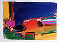
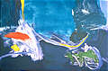
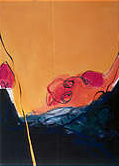
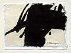
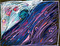
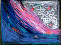
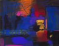
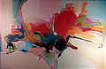
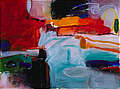
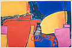

|
bright_idea_iii.jpg  "Bright Idea, III" watercolor with gouache, 21” h x 24”w |
brilliant_deep.jpg  “Brilliant Deep” monotype, 29” h x 41” w |
feelgood.jpg  “Feelgood” oil on canvas, 30” h x 24” w |
india_ink_drawing_xv.jpg  “India Ink on Japanese Paper, XV” ink drawing, work size = 5” x 6.75”, framed |
|
liminal_i.jpg  “Liminal, I” pastel on black paper, 19”h x 25”w, unframed |
liminal_ii.jpg  “Liminal, II” pastel on black paper, 19”h x 25”w, unframed |
nourished_by_dreams_and_memories.jpg  “Nourished by Dreams and Memories” pastel, 20" h x 23" w, framed |
optically_induced_zeeman_coherence.jpg  “Optically Induced Zeeman Coherence...” oil on canvas, 48” h x 72” w |
|
tisdale.jpg  “Tisdale” watercolor, gouache, oil pastel, 18”h x 21”w |
torrid_zone_ii.jpg  “Torrid Zone, II” monotype, 29” h x 41” w, framed |